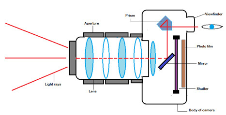

In this age of technological ingenuity, there has yet to be a product that can emulate the pure magic latent to the medium of film cameras. A dance between the user, the observable environment, and the right hardware results in a capture that teems with life, containing a grain that flows through the composition similarly to the very energy present in the captured moment. In order to fully take advantage of the range of possibilities the practice provides, it is important to understand the physical mechanics and the guiding concepts that are involved in taking a snapshot in 35mm.
A camera itself is essentially a box sealed off from light, with the exception of a single point, the lens. The lens consists of multiple pieces of glass and is covered by the shutter, which opens at a controlled speed when a photo is taken, a speed that determines the amount of time the film negative is exposed to light, starting the chemical reaction which will translate the image. A lens is defined by its focal length, which is not a measurement of the actual length of a lens, but a calculation of an optical distance from the point where light rays converge to form a sharp image of an object to the film at the focal plane in the camera. This distance is what determines how much of the scene is captured as well as the magnification of its elements; A 50mm lens is considered a “standard” focal length lens, while any lens with shorter than 50mm focal length falls into the wide angle category, and those with a focal length longer than 50mm are considered telephoto. 
Controlling the amount of light is imperative for controlling the look of a photo, so it is important to know that exposure is effected by both the amount of time and the intensity of the light hitting the film. The exposure is altered through manipulating the shutter speed, aperture, and ISO of the camera in relation to one another. Shutter speed is the length of time the shutter is open for exposure, and is measured in fractions of a second, such as 1/15 (1/15th of a second), 1/30, 1/60, 1/125. A slow shutter speed lets in more light, while a fast shutter lets in less. The aperture controls the diameter of the lens opening, controlling how much light passes to the sensor, and is measured as a fraction of the focal length, as "f-stops" such as f/1, f1.4, f2, f2.8, f4, f5.6. The higher the number, the smaller the hole, and the less light that will travel inward. The aperture also controlls depth-of-field, which is the amount of the image that is sharp - if it is a very small number like f22, the depth of field is large, while if the aperture is large like an f2, the depth of field is small.
The final determinant of exposure is the film speed, or ISO. It is the large number that is printed on most film boxes, and tends to be sold in the increments of 50, 100, 200, 400, 800, 1600, & 3200. The ISO determines the film's sensitivity to light, with it being more sensitive at higher numbers. The higher the ISO the higher the grain that appears as well, with lower numbers being better for daytime and higher numbers being better for the night. To create an image that is both properly focused and exposed, one must first set their ISO, and then make sure their light meter is properly equated between their shutter speed and aperture. When one is raised, the other should be lowered in order to maintain a balanced level of exposure.